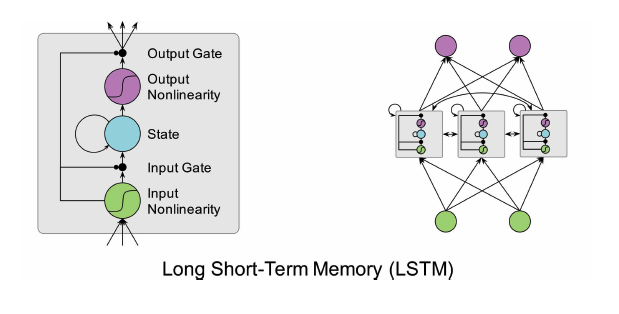
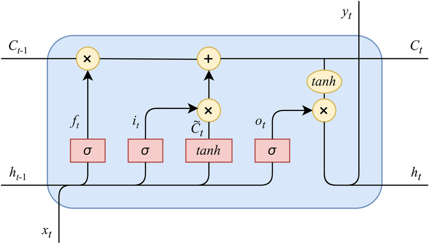

LSTM (Long Short-Term Memory)¶
LSTM networks are a type of recurrent neural network (RNN) designed to learn patterns in sequential data (e.g., time series). For discharge prediction, LSTMs can capture temporal dependencies such as seasonality, delayed runoff response, and persistence effects.
Intuition (with diagrams)¶
Overall flow¶

Inside an LSTM cell¶

Minimal Keras example (time series regression)¶
The snippet below shows a typical workflow:
- Convert a 1D time series into sliding windows (lookback sequences)
- Train an LSTM to predict the next value
import numpy as np
from tensorflow.keras.models import Sequential
from tensorflow.keras.layers import LSTM, Dense, Dropout
def make_windows(series: np.ndarray, lookback: int):
series = np.asarray(series, dtype=np.float32)
X, y = [], []
for i in range(len(series) - lookback):
X.append(series[i : i + lookback])
y.append(series[i + lookback])
X = np.array(X)[..., None] # (samples, lookback, 1 feature)
y = np.array(y)
return X, y
# Example: replace with your discharge array (e.g., daily m^3/s)
discharge = np.random.rand(2000).astype(np.float32)
lookback = 30
X, y = make_windows(discharge, lookback)
split = int(0.8 * len(X))
X_train, X_test = X[:split], X[split:]
y_train, y_test = y[:split], y[split:]
model = Sequential(
[
LSTM(64, input_shape=(lookback, 1)),
Dropout(0.2),
Dense(32, activation="relu"),
Dense(1),
]
)
model.compile(optimizer="adam", loss="mse")
model.summary()
history = model.fit(
X_train,
y_train,
validation_data=(X_test, y_test),
epochs=20,
batch_size=32,
verbose=1,
)
y_pred = model.predict(X_test).reshape(-1)
print("Predictions shape:", y_pred.shape)
Notes for discharge prediction¶
- Multiple inputs: You can add rainfall, temperature, and lagged features by stacking them as
(samples, lookback, n_features). - Scaling: LSTMs are sensitive to scale; standardize/normalize inputs and (optionally) the target.
- Evaluation: Use the same metrics as other models (e.g., R², NSE, RMSE, PBIAS) and compare on the same test split.